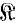
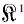

物理学家在那个从日常生活抽象出来的有重物质的观念之外，为什么还要建立起存在另一种物质——以太的观念呢？其理由无疑在于引起超距作用力理论的那些现象，以及导致波动论的光的那些性质。我们想要对这两件事作一番简略的考查。
非物理学的思想并不知道什么超距作用力。当我们试图以因果性的方式来深入理解我们在物体上所形成的经验时，初看起来，似乎除了由直接的接触所产生的那些相互作用，比如由碰、压和拉来传递运动，用火焰加热或引起燃烧，等等，此外就没有别种相互作用了。固然，重力这样一种超距作用力，在日常经验中已经起着重大的作用。但是由于物体的重力在日常生活中是作为某种不变的量呈现在我们的面前，它同任何时间上或空间上可以变化的原因都无联系，所以我们在日常生活中通常就想不到重力还有什么原因，因而也意识不到它有像超距作用力那样的特征。直到牛顿的引力理论把引力解释为由物质所产生的一种超距作用力，才给它提出了一种原因。虽然牛顿的理论标志着把自然现象因果地联系起来而进行的努力中所取得的最大的进步，然而这个理论在他的同时代人那里却产生了强烈的不满，因为它似乎同从其他经验推导出来的原理相矛盾，这就是相互作用只能通过接触而不能通过无媒介的超距作用来产生。
人类的求知欲只好勉强忍受这样一种二元论。怎样才能拯救自然力概念的一致性呢？要么人们可以把那些作为接触力呈现在我们面前的力，也当作只在很微小的距离中确实可以察觉到的超距作用力来理解；这是牛顿的后继者们大多所偏爱的道路，因为他们完全迷醉于牛顿的学说。要么人们可以假定，牛顿的超距作用力只是虚构的无媒介的超距作用力，其实它们却是靠一种充满空间的媒质来传递的，不论是靠这种媒质的运动，还是靠它的弹性形变。这样，为了使我们对于这些力的本性有一个统一的看法，便导致了以太假说。首先，以太假说对引力理论和物理学的确完全没有带来任何一点进步，以致人们养成了一种习惯，把牛顿的〔引〕力定律当作不可再简约的公理来对待。但是以太假说势必要在物理学家的思想中继续不断地起作用，即使最初至多只是起一种潜在的作用。
19世纪上半叶，当光的性质同有重物体的弹性波的性质之间存在着广泛的相似性已经变得明显的时候，以太假说就获得了新的支持。光必须解释为充满宇宙空间的一种具有弹性的惰性媒质的振动过程，这看起来似乎是无可怀疑的了。从光的偏振性也好像必然要得出这样的结论： 以太这种媒质必须具有一种固体特性。因为横波只可能在固体中，而不可能在流体中存在。这就势必导致“准刚性”的光以太理论，这种光以太的各部分，除了同光波相应的微小形变运动以外，相互之间就不可能有任何别种运动。
这种理论也叫做静态光以太理论，它从那个也作为狭义相对论基础的斐索（Fizeau）实验，进一步得到了有力的支持，人们从这个实验必定推断出，光以太不参与物体的运动。光行差现象也支持准刚性的以太理论。
电学理论循着麦克斯韦和洛伦兹所指示的道路向前发展，在我们关于以太观念的发展中引起了一次最独特的、最意外的转变。在麦克斯韦本人看来，以太固然还是一种具有纯粹机械性质的实体（Gebilde），尽管它的机械性质比起可捉摸的固体的性质要复杂得多。但是麦克斯韦和他的后继者都没有做到给以太想出一种机械模型，为麦克斯韦电磁场定律提供一种令人满意的力学解释。这些定律既清楚又简单，而那些力学解释却既笨拙，而又充满矛盾。这种情况从理论物理学家的力学纲领的观点来看是最令人沮丧的，但是他们差不多都不知不觉地适应了这种情况，这特别是由于受到海因里希·赫兹（Heinrich Hertz）关于电动力学的研究的影响。以前他们曾经要求一种终极理论，要求它必须以那些纯粹属于力学的基本概念（比如物质密度、速度、形变、压力）为基础，以后他们就逐渐习惯于承认电场强度和磁场强度都是同力学基本概念并列的基本概念，而不要求对它们作力学的解释了。这样，纯粹机械的自然观就逐渐被抛弃了。但是这一变化却导致一种无法长期容忍的理论基础上的二元论。为了摆脱它，人们采取相反的路线，试图把力学基本概念归结为电学的基本概念，当时，在β射线和高速阴极射线方面的实验，动摇了对牛顿力学方程的严格有效性的信赖。
在H. 赫兹那里，这种二元论仍未得到缓和。他把物质不仅看成是速度、动能和机械压力的载体，而且也看成是电磁场的载体。既然在真实——即自由的以太——中也出现这种场，那么以太也就好像是电磁场的载体。它好像同有重物质完全是同类的和并列的。在物质中，它参与物质的运动；在空虚空间中它到处都有速度，这种以太速度在整个空间中都是连续分布的。赫兹的以太原则上同（部分地由以太组成的）有重物质没有任何区别。
赫兹的理论不仅有这样的缺点，即它赋予物质和以太一方面以力学状态，另一方面以电学状态，而两者之间却没有任何想象的联系；而且这个理论也不符合斐索关于光在运动流体中传播速度的重要实验的结果，以及其他可靠的经验事实。
当H.A.洛伦兹上场时，情况就是如此。他使理论同经验协调起来，那是用一种对理论基础加以奇妙的简化的办法来做到这一点的。他取消了以太的力学性质，取消了物质的电磁性质，从而取得了麦克斯韦以来电学的最重要的进步。物体内部也同空虚空间一样，只有以太，而不是原子论者所设想的物质，才是电磁场的基体。依照洛伦兹的意见，物质的基本粒子只能运动；它们所以有电磁效能，完全在于它们带有电荷。洛伦兹由此成功地把一切电磁现象都归结为麦克斯韦的真空-场方程。
至于洛伦兹以太的力学性质，人们可以带点诙谐地说，洛伦兹给它留下的唯一的力学性质就是不动性。不妨补充一句，狭义相对论带给以太概念的全部变革，就在于它取消了以太的这个最后的力学性质，即不动性。至于该怎样来理解这句话，应当立即加以说明。
麦克斯韦-洛伦兹的电磁场理论已经为狭义相对论的空间-时间理论和运动学提供了一个雏形。所以这个理论满足狭义相对论的各项条件；但是从狭义相对论的观点来考虑，它就得到了一种新的面貌。假定

是这样一个坐标系，洛伦兹以太对于它是静止的，那么麦克斯韦-洛伦兹方程首先对于 是有效的。然而根据狭义相对论，这些方程对于任何一个对 作匀速平移运动的新坐标系
也同样有效。现在就发生这样一个令人不安的问题： 坐标系 同坐标系 既然在物理上是完全等效的，我为什么在狭义相对论中要用以太对 是静止的这个假定来把 突出在 之上呢？对于没有任何经验体系的不对称性与之对应的这样一种理论结构的不对称性，理论家是无法容忍的。依我看来，在以太对于 是静止而对于 则是运动的这种假定下， 和 在物理上的等效性，就逻辑观点来说虽然不是绝对错误的，但无论如何也是无法接受的。面对着这种情况，人们可以采取的最近便的观点似乎是认为以太根本不存在。认为电磁场不是一种媒质的状态，而是一种独立的实在，正像有重物质的原子那样，不能归结为任何别的东西，也不依附在任何载体之上。这种见解所以显得更为自然，是因为根据洛伦兹理论，电磁辐射像有重物质一样具有冲量和能量，而且还因为，根据狭义相对论，在有重物质失去它的特殊地位而仅仅表现为能量的特殊形式时，物质和辐射两者都不过是所分配的能量的特殊形式。
然而，更加精确的考查表明，狭义相对论并不一定要求否定以太。可以假定有以太存在；只是必须不再认为它有确定的运动状态，也就是说，必须抽掉洛伦兹给它留下的那个最后的力学特征。我们以后会看到，这种想法已为广义相对论的结果所证实，我打算立即通过一种不很恰当的对比，使这种想法在想象上的可能性显得更加清楚。
设想一个水面上的波。关于这种过程，可以叙述两种完全不同的事情。人们首先可以追踪水和空气的波形界面如何随时间而变化。但是人们也可以——比如借助于一些小的浮体——追踪各个水粒子的位置如何随时间而变化。要是原则上没有这种小浮体可用来追踪液体粒子的运动，要是在整个过程中果真除了随时间变化的那些被水所占的空间位置以外，根本没有什么别的东西可以察觉到，那么我们就没有理由可以假定水是由运动的粒子所组成的。但是我们仍然可以称它为媒质。
电磁场存在着某种类似的情况。可以设想这种场是由力线所组成的。如果要把这种力线解释为通常意义下的某种物质的东西，那就是试图把动力学过程解释为这种力线的这样一种运动过程，即每条力线始终可以随着时间追踪下去。可是大家都很了解，这样一种想法会导致矛盾。
我们必须概括地说： 可以设想某些有广延的物理客体，对于它们，任何运动概念都是不能应用的。不允许把它们设想成是由各个可以随时间始终追踪下去的粒子所组成。这用闵可夫斯基的话来说就是： 并不是每一个在四维世界中有广延的实体都可以理解为是由世界线（Weltfden）所构成的。狭义相对论不允许我们假定以太是由那些可以随时间追踪下去的粒子所组成的，但是以太假说本身同狭义相对论并不抵触，只要我们当心不要把运动状态强加给以太就行了。
当然，从狭义相对论的观点来看，以太假说首先是一种无用的假说。在电磁场方程中，除了电荷密度外，只出现场的强度。真空中电磁过程的进程看起来好像完全取决于那条内在的定律，丝毫不受其他物理量的影响。电磁场是以最终的、不能再归结为别的东西的实在的身份而出现的，再假定一种均匀的、各向同性的以太媒质，而那些电磁场必须理解为是它的状态，这就尤其显得是画蛇添足了。
但是，另一方面却可以提出一个有利于以太假设的重要论据。否认以太的存在，最后总是意味着承认空虚空间绝对没有任何物理性质。这种见解不符合力学的基本事实。一个在空虚空间中自由漂浮的物质体系的力学行为，不仅取决于相对位置（距离）和相对速度，而且也取决于它的转动状态，这种转动状态在物理上不能了解为属于这种体系本身的一种特征。为了至少能够在形式上把体系的转动看成某种实在的东西，牛顿就把空间客观化了。既然他认为他的绝对空间是实在的东西，那么在他看来，相对于一个绝对空间的转动也就该是某种实在的东西了。牛顿同样也可以恰当地把他的绝对空间叫做“以太”；问题的实质就在于，为了能够把加速度和转动都看作是某种实在的东西，除了可观察到的客体之外，还必须把另一种不可察觉的东西也看作是实在的。
马赫固然曾经尝试过，在力学中用一种对世界上所有物体的平均加速度来代替相对于绝对空间的加速度，以避免去假设有某种观察不到的实在东西的必要性。但是一种对于遥远物体相对加速度的惯性阻力，却得预先假定有一种直接的超距作用。既然现代物理学家认为不应当作这样的假定，那么在这种见解下，他也就重新回到了能作为惯性作用的媒质的以太上来。但是马赫的思考方法所引进的这种以太概念，同牛顿、菲涅耳（Fresnel）以及洛伦兹的以太概念在本质上是有区别的。这种马赫的以太不仅决定着惯性物体的行为，而且就其状态来说，也取决于这些惯性物体。
马赫的思想在广义相对论的以太中得到了充分的发展。根据这种理论，在各个分开的时空点的附近，时空连续区的度规性质是各不相同的，并且共同取决于该区域之外存在的全部物质。量杆和时钟在相互关系上的这种空间-时间上的变异，也就是认为“空虚空间”在物理关系上既不是均匀的也不是各向同性的这种知识，迫使我们不得不用十个函数，即引力势gμv ,来描述空虚空间的状态，这无疑最终取消了空间在物理上是空虚的这个见解。但是以太由此也就又有了一种确定的内容，这种内容当然同光的机械波动说的以太的内容大不相同。广义相对论的以太是这样的一种媒质，它本身完全没有一切力学的和运动学的性质，但它却参与对力学（和电磁学）事件的决定。
这种在原则上新的广义相对论以太同洛伦兹以太的对立就在于： 广义相对论以太在每一点的状态，都是由它同物质以及它同邻近各点的以太状态之间的关系所决定的，这种关系表现为一些用微分方程的形式来表示的定律；可是在没有电磁场的情况下，洛伦兹以太的状态却不取决于任何在它之外的东西，而且到处都是相同的。如果用常数来代替那些描述广义相对论以太的函数，同时不考虑任何决定以太状态的原因，那么广义相对论以太就可以在想象中转变为洛伦兹以太。因此人们也的确可以说，广义相对论以太是把洛伦兹以太加以相对论化而得出的。
至于这种新的以太在未来物理学的世界图像中注定要起的作用，我们现在还不清楚。我们知道，它确定空间-时间连续区中的度规关系，比如确定固体各种可能的排列以及引力场；但是我们不知道，它在构成物质的带电基本粒子的结构中究竟是不是一个重要的部分。我们也不知道，究竟是不是只有在有重物质的附近，它的结构才同洛伦兹以太的结构大不相同，以及宇宙范围的空间几何究竟是不是近乎欧几里得的。但是我们根据相对论的引力方程却可以断言，只要宇宙中存在一个哪怕很小的正的物质平均密度，宇宙数量级的空间的性状就必定存在着对欧几里得几何的偏离。在这种情况下，宇宙在空间上必定是封闭的和大小有限的，其大小则取决于那个〔物质的〕平均密度的数值。
如果我们从以太假说的观点来考查引力场和电磁场，那么两者之间就存在着一个值得注意的原则性的差别。没有任何一种空间，而且也没有空间的任何一部分，是没有引力势的；因为这些引力势赋予它以空间的度规性质，要是没有这些度规性质，空间就根本无法想象。引力场的存在是同空间的存在直接联系在一起的。反之，空间一个部分没有电磁场却是完全可以想象的；因此，电磁场看来同引力场相反，似乎同以太只有间接的关系，这是由于电磁场的形式性质完全不是由引力以太来确定的。从理论的现状看来，电磁场同引力场相比，它好像是以一种完全新的形式因（formales Motiv）为基础的，好像自然界能够不赋予以太以电磁类型的场，而赋予它另一种完全不同类型的场，比如一种标势的场，也会是同样适合的。
既然依照我们今天的见解，物质的基本粒子按其本质来说，不过是电磁场的凝聚，而绝非别的什么，那么我们今天的世界图像就得承认有两种在概念上彼此完全独立的（尽管在因果关系上是相互联系的）实在，即引力场和电磁场，或者——人们还可以把它们叫做——空间和物质。
如果引力场和电磁场合并成为一个统一的实体，那当然是一巨大的进步。那时，由法拉第和麦克斯韦所开创的理论物理学的新纪元才获得令人满意的结束。那时，以太-物质这种对立就会逐渐消失，整个物理学通过广义相对论而成为类似几何学，运动学和引力理论那样的一种完备的思想体系。数学家H.魏耳（Weyl）在这个方向上作了非常富有才气的研究，但我并不认为他的理论在现实面前会站得住脚。而且，我们在想到理论物理学的最近的将来时，不应当无条件地忘掉量子论所概括的事实有可能会给场论设下无法逾越的界限。
我们可以总结如下： 依照广义相对论，空间已经被赋予物理性质；因此，在这种意义上说，存在着一种以太。依照广义相对论，一个没有以太的空间是不可思议的；因为在这样一种空间里，不但光不能传播，而且量杆和时钟也不可能存在，因此也就没有物理意义上的空间-时间间隔。但是又不可认为这种以太会具有那些为有重媒质所特有的性质，也不可认为它是由那些能够随时间追踪下去的粒子所组成的；而且也不可把运动概念用于以太。
[1] 这是爱因斯坦于1920年5月5日在荷兰国立莱顿（Leiden）大学所作的报告。讲稿当年由柏林J. Springer出版社以单行本小册子的形式出版，题名为Äther und Relativitätstheorie 。1934年英文版《我的世界观》中有它的译文，但标题改为《相对论和以太》，未注明出处，而且译错的地方很多。这里译自这本小册子的1920年德文版。——编译者注。